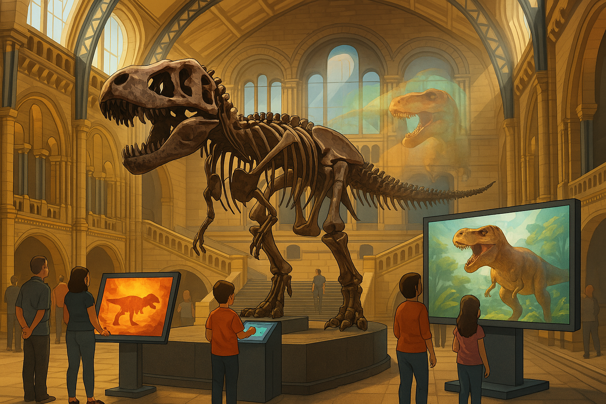
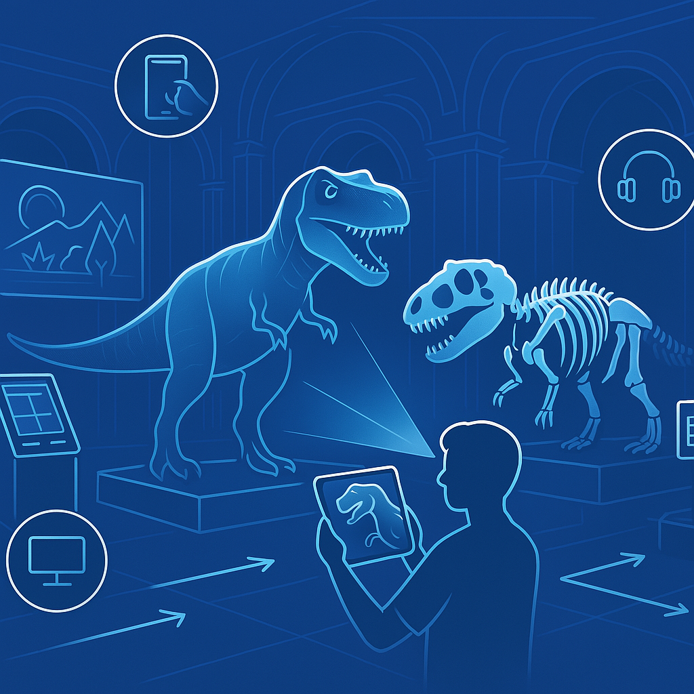
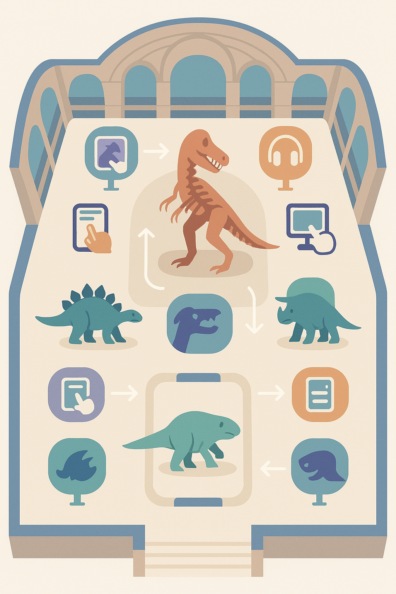

Introducción al Proyecto
Explora la Sala Azul del Museo con tecnología RA y modelos interactivos.
Explora el T-Rex en 3D
Transformando la experiencia en la Sala de Dinosaurios

- El Museo de Historia Natural de Londres es un referente mundial en ciencia y cultura.
- Su Sala de Dinosaurios es una de las más visitadas, pero la interacción sigue siendo limitada.
- Esta propuesta busca integrar tecnologías multimedia para enriquecer la experiencia del visitante.
Concepto de la Propuesta
El objetivo es ofrecer una experiencia inmersiva mediante el uso de realidad aumentada,
modelos 3D y audio interactivo.
Los visitantes podrán visualizar cómo se movían y vivían los dinosaurios, en una propuesta
educativa, lúdica e inclusiva adaptada a todas las edades.

Recorrido Interactivo por la Sala Azul
El recorrido está diseñado para ser explorado de forma intuitiva:
- Escanear un fósil → aparece dinosaurio en RA
- Escuchar su rugido o comportamiento
- Ver videos sobre su entorno natural
